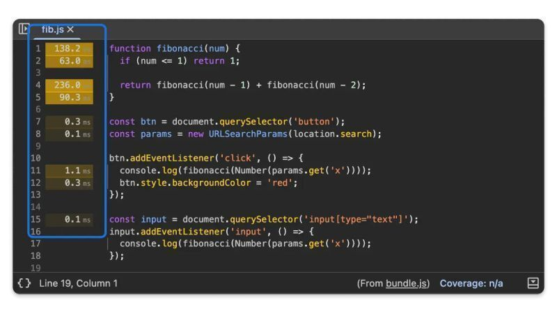

טיפ מעניין למפתחי ווב: Chrome DevTools מאפשר לך לראות עכשיו ביצועים ברמת השורה!
אם אתם משתמשים ב-Chrome DevTools, ומשתמשים בהקלטת הפרפורמנס, עכשיו לוח ה-Sources יכול להציג את התזמונים לפי כל שורת קוד!
זה מאפשר לך לזהות בדיוק איזה שורות קוד צורכות את רוב זמן הביצוע בפרויקט ולייעל אותו
טיפ מעניין למפתחי ווב: Chrome DevTools מאפשר לך לראות עכשיו ביצועים ברמת השורה!
פורסם במקור ב LinkedIn
